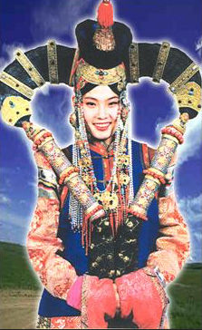
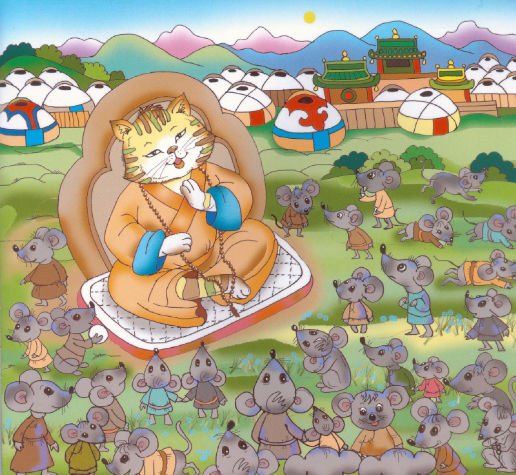

| 『モンゴル人の友となりて」 分冊11 | |
| 佐藤武久（編集） | |
| (2016) | |
編集者のまえがき
この電子書籍は「蒙古人の友となりて」（ジェームズ・ギルモア 著 (1883.05) 後藤冨男訳 (1939.09.06)）を分冊化し、第26章、第27章、第28章を分冊11として電子書籍化したものです。
電子化にあたり「蒙古」を「モンゴル」に、「喇嘛」を「ラマ」に、「包（パオ）」を「ゲル」に置き換えるなど旧仮名使いや古い言い回しの一部を改訳しております。
第26章 真夏の廟会
第27章 モンゴル人の服装
第28章 モンゴルのイソップ物語
なお、1883年5月ロンドンで公刊された英文の原書「Among the Mongols」の無料のeBookが次のサイトで入手でき、iBooksで閲覧できます。
https://archive.org/details/amongmongols00gilm
さらに、もう一つの著作も下記サイトで入手できます。
「JAMES GILMOUR OF MONGOLIA HIS DIARIES LETTERS AND REPORTS」
「モンゴル人の友となりて」
ジェームズ・ギルモア 著 (1883.05)
後藤冨男 訳 (1939.09.06)
佐藤武久 編集・電子化（2015.12.15)
（原書の表紙）

（ギルモアの肖像）

総目次
第26章 真夏の廟会
第27章 モンゴル人の服装
男女とも、着物の型は非常によく似ている。主な相違は。男が帯を巻くのに対し、女は長い着物を肩からかかとまで着流していることぐらいで、だからモンゴルでは女は普通「帯のない人（ブスグイ・フン）と言う別名で呼ばれている。外衣は男女いずれも極めてゆったりとして、裾はほとんど地面に引きずり、袖口もたっぷりしているから、ボタンを用いなくても、腕の出し入れは自由自在である。この外衣はたっぷりしていて寝るときにはよく毛布の役目も果たす。袖から腕を引つ込めれば、外に出ているのは頭だけである。専用のこの小さなテントに納まり、至極便利である。朝もこれを纏って寝床を起き、夜もこれにくるまったまま休む。この点恵まれない外国人は、テントの中に人がいくらいようと平気で、着たり脱いだりできる便利さを羨むばかりである。
モンゴルの婦人は朝起きるとまず着物を着直し、家の用事に取りかかる。長い外衣がぶがぶかしているので、非常にだらしなく見える。乳を搾ったり、食事こしらえをしていると、上着が汚れた地面に引きずっているので、随分締まりのない外見である。しかしこの寛衣がまことに調法な場合もある。ある朝、平原を駝車に乗って行った一旅人が、駱駝に乗って案内するモンゴル婦人の素振りを見て、何をするのかと大いに訝った。まず両腕が見えなくなった。おやと思って内に肩のあたりが妙に動く。しばらくすると上着が滑り落ち、下には暑くなる日差しにあった別の着物が現れた。この女は、駱駝に乗り、駝車の先に立ちながら、しかも衣替えをしてのけたのである。この手際良さ、慎ましさ、衣装の変わるまでは一向に何をしているか分らなかった。
男は朝起床すると、多くは火の傍にうずくまり、外衣の胸を開けて気楽そうに暖をとりながら煙草を喫う。しばらく温まってから短い木綿の下着を探すのだが、この下着は体よく言えばシャツである。ところがこのシャツを出されると、いかにモンゴル人の衣服に慣れていても、外人は不愉快になる。というのは、おそらく半年ほど前には新しくもありあるいは洗いもしたろうが、少なくともそれ以来それ肌身を離すことはなかったほどのものである！
顔を洗うのはまた見ものである。モンゴル人といえども一日に一回洗顔する。常に身につけている木椀に少量の水を入れ、手に少しづつ移したり、口に含んで吐き出したりする。洗うのは顔と手に限られ、頸やその他の部分はてんから水に縁のないものとされている。洗顔そのものはさまで奇異ではないが、拭う段になると少し変わってくる。モンゴル人には先の考えなどないから、顔を洗ってから何で拭いたものかと考え始める。顔から雫を滴らせながら周囲を見回して、第一に目に映るのが例の「シャツ」で、これが否応なしにタオルの役目を仰せ付かる。ややに見嗜みの良い人になるとハンカチを用いるが、これとても、シャツより少しましな代物である。
ここにもう一つ、特に娘さん方に流行の方法がある。洗い終わると静かに両手で顔を摩擦し、水気を集めて口の辺まで持ってくると、チュッと一吸いにするのである。この音や思いつきは決して快いものではないが、まず最もを清潔な拭い方で、見るものの目にも最も不快の感の少ないものであろう。
足は慮外の出来事でもなければ決して洗わない。つまり、雨中に羊を追うとか、流れを裸足で渉らねばならぬ時のみである。沐浴も普通は行われない。あるモンゴル人の曰く、
「冬は寒すぎるし、夏は蝿がうるさい」
と。言わずもがな、無精者の言い逃れである。入浴する気さえあれば、十中八九は訳なくできる。私がかつてあった病人は、自分も医者であるところから、病気治療には温浴法を選んだ。彼はゲルの内部に、小さな浴槽をしつらえた。深さ三尺の桶を地面に埋め込み、大きさはちょうど座れるくらい、天井からフェルトの帷を二枚たらした。この中に入って帷を閉じれば、誰にはばかるところもなく、着物を脱ごうが着ようがお好み次第である。病気予防のためモンゴル人が入浴を勧められた場合もおそらくこれに似寄りの形式をとるのであろう。
貧乏人の衣服は惨めだ。男も女も汚れて臭いボロにくるまって寒さに震えている。金持ちは豪奢に着飾っている。立派な子羊皮を裏につけた華美な長衣をまとい、大きな銀飾りをたくさん腰に下げている。その毛皮帽子がものものしい。衣装全体に匹敵するほどの高価な帽子をかぶったものも多い見受ける。されど、モンゴル人の富と身分の真の標準となるものは、何と言っても嗅ぎタバコ入れである。これは初見の人にも差し出すのが習慣になっているから、これによってどこで何人に会おうと、直ちにその地位を察し得るのである。この容器は北京から来るので、価格も数問から八十両くらいまである。安物はガラス製だが、上物は美しい玉を巧みに刳り抜いたもので、極めて精緻な仕上げを施している。婦人は普通嗅ぎタバコ入れを携帯しないが、公式の場合には、仕舞い込んででいる箱から取り出して身に付ける。婦人用のそれはほとんどいずれも小型の薄い扁平な玉製であって、おそらく物を入れる余地がない。また私の見た限りでは、常に中身は空であるが、その有無は別に問題ではない。これを礼儀と形式に従って差し出せば、受け取る方でも心得ていて、内容のないことなど見もせず、丁重に嗅いで、恭しく返すのである。
しかし何と言ってもモンゴル服飾の中で最も人目は惹くのは、婦人の頭髪の結い方と髪飾りであろう。貧しい婦人でも、既婚なればあまたの銀飾りや道具をつけ、頭から垂れているが、その垢染みて薄汚い身なりに比べて奇妙な対照である。厳密に言えばこれら装飾品の種類や形態は部族の異なるにつれて違うので、部族の伝統に精通している者は、一瞥してその婦人がどの旗に属するかを語り得る。されど相違があるにせよ、わずらわしいという点では選ぶところがない。もっともモンゴル人に言わせたら、見栄えがするのであろう。しかもこれによって生ずる結果に独特な髪の結い方がある。これは、一度結うたが最後、時間の経過とともに壊れてきて、どうでも結い直さねばならぬまでは手つかず、そのままにして置かれる。一ヶ月も手を付けないでおくと聞けば、定めて蓬頭を想像するであろうが、決してそうではない。銀飾りの下がっている髪の毛は解かぬが、表面だけは結い直すの、しごく清楚に見える。彼らは膠で押し固めるから、心得たものがそばに寄って仔細に眺めない限り、充分体裁はついている。

（編集者による追加.）
部族によっては、頭にかぶるハチマキに飾りを下げたものがあり、耳輪をもってこれを支えている。髪飾りは重いから、頭を前に下げると耳たぶが膨らむので、見ている方がつらくなる。年長の婦人が耳を裂いたのを一再ならず目撃した時には暗然とせざるを得なかった。私の赴いたある部族では、既婚のご婦人の髪飾りが高く突っ張っているので、帽子をかぶっても乗せ場がない。と言って、正式な初対面とか、永らく会わなかった友を迎えるときなどには、どうしても帽子をかぶらねばならぬ。仕方がないから帽子は飾りの上に縛って置く。頭からすっかり浮いてしまって、まことに滑稽な有様で、そうした婦人から嗅ぎタバコ瓶をいただくとき謹厳を装うのに一苦労を要する。
日常の飾りだけでも、扱いにくいことにかけては不足はないのだが、祝祭日にはさらにカーティンのような数珠飾りが加わる。婦人連が燃え立つような衣装を纏い、立派な毛皮帽をかぶり、ほとんどの腰に達する紅珊瑚の数珠玉で覆われ、その上銀飾りに光り輝きながら、寺の石廊に居並ぶ様は、実に目覚めるばかりの光景である。この光景を目撃しては、盲目者か偏屈でない限り、これらの婦人の美が、装飾によってひときわ光彩を放つことを拒まぬであろう。モンゴルの婦人は外国婦人を見て、髪飾りのないのを不思議がる。他方我々は、飾らない美が美の極致であると考える風がある。若いモンゴル人はかなりに美しい、しかし飾りを付けた時が最も美しい。この点では、わが欧州婦人も、珊瑚珠や膠までとはいわぬまでも立派な髪飾りをつけたら、外見は一層美しく見えよう。モンゴルの婦人美が容貌外見に限られるのに対し、我々はもっぱら婦人の心性を評価し、さまで外様に捉われない所に彼我の相違がある。モンゴルの婦人は心を有することを滅多に教えられないのだから、自己の優性を示すためには、容貌に憂き身をやつすより他ないのは当然のことだ。
男子の服装も我々のそれより具合良くできている。嘘だと思うなら、窮屈なズボンを穿いてせせこましい上衣を着た外国人と、踵に達するゆったりした長衣を纏うモンゴル人を見比べるがよい。あの体裁ではなどと言うなかれだ。モンゴル人のように何もしないでよかったら、我々だってあれを着ていたい。
（EOF）
第28章 モンゴルのイソップ物語
野兎と獅子ー井の中のめくら亀ー七匹の虱と蚤ー商人と狂人ー鳥とラマー鸚鵡と王様ー改心した猫ー豚に真珠ー二十日鼠と象ー真珠作りー怒りっぽい猿ー狐と鳥ー毛を染めた狐ー外面菩薩内心夜叉ー蛙と二羽の雁
次の寓話は、モンゴル人の先生が、私をモンゴル語に親しませる目的で、口授された中から選んだものである。その大多数はモンゴルの封土に固有のものではなく、モンゴル人が見も知りもせぬ風景のある国から来たものであることは一目して瞭然であろう。先生は後にこの物語を写してくれたが、何かの書物から抜粋したのか、あるいは単に記憶に基づいて記し、それに教訓を自分で考え出して付け加えたのか、それは私にも分からない。
一、野兎と獅子
ある所に一頭の獅子がいて、野原の獣を次々と捕まえては、いつも変わったご馳走食べることにしていました。とうとう野兎の番となりました。獅子は野兎を見てつまらなそうに申します。
「今日のご馳走はなんとみすぼらしいのだろう。お前では食べてやる気にもなれない。食べたって歯の間にも挟まりはしない。食べがいがないよ。」
ウサギが答えます。
「どうか、そうおっしゃらずに召し上がってください。私はたった今、やはり貴君のように恐ろしげな獣に、すんでのことで食われるところを、かろうじて逃げてきたのですから。」
これを聞いた獅子はかんしゃく玉を破裂させて詰め寄りました。
「俺のような獣がどこにいるのだ。彼奴を俺に見せろ！」
兎は獅子を井戸のそばに連れて行き、そして下をご覧なさいと申しました。獅子は言われた通りに下を見ますと、どうでしょう。顔をしかめ、たてがみをふりかぶり、恐ろしい様子で自分と同じように、歯をむいています。もう獅子は我慢ができません。たちまち相手をめがけて飛び込み、とうとう溺れて死んでしまいました。
教訓。知恵の力のあるものは、体力は弱いからとて馬鹿にしてはいけない。強敵も精神力を持って倒される。心の力を常に養え。
二、井の中のめくら亀
ある井戸の中にめくらの亀が住んでいました。ところへ、別の亀が、もともと大海を住居にしてたのですが、陸の旅行に来て、誤ってこの井戸に落ち込みました。めくらの亀が新来の友にどこから来たのかと訊ねると、
「海から来た」
と言いますので、井戸の中をちょっと泳ぎ回ってからまた尋ねました。
「海の水ってこれくらいあるのかね？」
「もっとだよ。」
と海の亀が答えます。井戸亀は今度は井戸の三分の二までも泳いで、海がそれほども広いかと訊きました。
「ずっと大きいよ。」
海亀が答えました。
「でわーーーとまた井戸亀が尋ねますーーー海はこの井戸ほどもあるのかい？」
「もっと 広いさ」
と 海亀の答えです。井戸亀は、
「では一体全体、海はどれほど大きいというのだ？」
海亀が答えて申しますには、
「君はずっとこの井戸の中に住んでいて、外の水を見たことがないから、小さいことの他は分からないのだ。海というのはね、君が何年泳いだって、半分も泳ぎ切れはしないし、どこかへ泳ぎ着くことも出来ないほど広いのだよ。君のこの井戸と比べることはxも出来はしない。」
すると井戸亀が申しました。
「ここよりも大きな水があるなんて、考えられない。君はただお国自慢をしたいために法螺を吹いているのだ。」
教訓。知識が狭く限られていると、もっと偉い人の言うことが分からないので、自分が一番偉いのだと自惚れる。ちょうどこの井戸亀のようなものである。
三、七匹の虱と蚤
ある仙人の衣に七匹の虱がいて、仙人が一念凝らそうとする時など、大層邪魔になったので、とうとう仙人は虱と相談して、もしお勤めの間だけ虱が喰わなかったら暇な時には噛んでも叱らないと申しました。この約束は都合よく運べました。ところが突然蚤が舞い込んできたのです。
「おや皆さんーーーと蚤が申しましたーーーなかなか居心地のいいところにおるね、私も仲間に入れてもらいましょう。」
虱は申し合わせのあることを蚤にも話し、それを守るように頼みました。ところが、
「仙人は君たちとは相談したのだろうが、僕には何も言わなかった。お勤めだろうとなんだろうと僕の知ったことではない。さあ始めよう」
と蚤は言いました。チクリ、仙人は喰わたのを感じました。
「おや、虱め、言葉を違えたな！」
そう言ってお勤めを中止し、衣を拡げましたので、蚤は早速跳ねて、逃げて行ってしまいました。虱を見つけたこのラマは、その嘘つきを責めます。虱は事情をすっかり話しましたが、仙人は騙そうとしているのだと思って、虱を捉まえて遠くへ追いやってしまいました。
教訓。性悪の蚤のために、不幸に陥った七匹の虱をお手本にして、悪い友に注意せよ。
四、商人と狂人
独り旅をしていた商人が、山道にさしかかると、一人の男に逢いましたので、山の向こう側へ行くとなにか危ないことがあるかと尋ねました。この男は気違いであったものですから、
「山の向こうに行けば火水の難があり、山賊が武器を持って待っているから、とても助かる途がない」
と答えました。これを聞いた商人は、行くことを止めて引き返しました。狂人の言葉は自分には何の益もなく、商人には損害を与えました。
教訓。愚かしい言葉に耳をかすな。
五、鳥とラマ
一人のラマが毎日お昼の食事に、鳥に少しずつ餌をやることにしていました。ある日鳥が姿を見せません。次の日の正午、鳥は来て二日分欲しがりましたが貰えないので腹を立て、盗人の所に飛んで行って、ラマは金貨をたくさん持っていると告げました。盗人の中に鳥の言葉のわかる者がいましたので、この報らせによってラマの所に押し込み、金貨を出せと要求しました。
ラマは金貨などは持っていないと言い、誰がそんなことを告げたのかと質問しました。
鳥が告げたのだと聞いて、事の成り行きを全部話しましたので、盗人たちはラマが金貨を持っていないことを知り、鳥は馬鹿な仕様のない奴となりました。その後、鳥はラマから食べ物を貰えなくなり、いつでもお腹を空かせていなければなりませんでした。
教訓。 食べ物で争うな。また、このように鳥獣の言葉が解れば、人の言うことはもっと良く解るはずである。
六、鸚鵡と王様
昔々、ある王様が猟りに行って言葉の話せる鸚鵡を捉まえました。鸚鵡が王様に申しました。
「王様、猟をお止め遊ばせ、王様のお留守の間に、隊長が王妃様と王子様方を殺して、お城を乗っ取ってしまいました。」
「汝は不吉なことを言う奴だ」
と王様は却って鸚鵡を殺し、隊長の館に行き、多数の人を殺めた後、お城にお帰りになりましたが、何も変わったことはありません。
皆無事で平和であるのを見た王様は、鸚鵡が嘘をついたのだと知って、自分のしたことを大層後悔なさいました。
教訓。 虚言、妄言は恐るべし、注意せよ。
七、改心した猫
一匹の猫が、あるラマから次々に物を盗んで、最後に数珠まで取りました。ラマは追いかけて行って、ちょうど猫が穴に入ろうとするところで、その尻尾を捉まえました。一生懸命引っ張りましたので、尾が切れてしまいました。それから猫は、痛いのと、ひもじいのとで大変困ってしまいました。何とかしてこれを切り抜けたいと、盗んだ数珠を首にかけて、野原に出て程よい場所に陣取りました。その内に一匹の野鼠が猫を見て逃げ出そうとするのを見つけたので、これを呼び止めて言いました。
「怖がらなくてもいいよ。ネズミ君。私は御仏に帰依した猫なのだ。私は決して殺生もしなければ、何の悪さもしないよ。お前さんも私のように清い生活をしておくれ。」

（編集者による追加：Ch.バヤルマー画）
この話は鼠の間に拡がりました。鼠たちは大勢で猫の所に集まって来て、猫がお経を上げる（咽喉を鳴らす）のを聴きました。お祈りが終わると、猫は、鼠たちに、行列を作って自分の周りを左から右にまわり、それから一匹づつ穴に引き上げるよう命じました。そして最後の鼠を取って食べました。この方法がしばらく続いたので、鼠の数はだんだん減ってきて、問題の種となりました。疑いも頭を持ち上げ始めました。そこで、長老の鼠が仲間と謀ってよく見張りをすることになりました。ところが骨や毛が落ちているのを見つけましたので、よもやという疑いが本当となりました。翌日、お勤めが終わってから、長老鼠が猫に尋ねました。
「先生、あなたはどんなものを召し上がって生きていらっしゃるのですか？」
「私は枯葉や枯れ草を食べて生きているのだ」
と猫が答えます。今度は長老鼠が会議を開いて、そこで皆に自分の疑念を話し、鈴一個と紐を一本を人間の家から参内してくるよう命令を発しました。そして命令通りに鈴と紐が人間の家から盗まれてきました。鈴は猫の首にかけるためで、こうすればお勤めが終わってから鈴がなれば皆でたちまち戻って来て、ことの次第を見極めることができます。鈴が手に入りましたので、翌日お勤めの時に長老鼠がお世辞を言ってその飾りを猫に贈り、口で言うより実際どう見えるだろうかと、その猫の首にかけてやりました。お勤めが終わって、皆が家へ帰る時、突然鈴の音が聞こえました。急いで皆が戻って来ると、猫はちょうど最後の鼠に跳び掛ろうとしています。長老鼠はこう申しました。
「先生、あなたは肥りましたが、私たちはこんなに減ってしまいました。私たちはこの宗旨ではちっとも栄えることが出来ません。さあ、お家に引き上げてください。けれど、その前に、あなたが枯葉や枯れ草を召し上がっていらっしゃるのに、こんなにたくさん毛や骨が落ちているのはどうした訳か話してください。」
鼠たちは棲家へ帰って行きましたが、猫は、ちょっとした不用意からとんだ騒ぎになったものと、胆に銘じて考え、もっと賢い方法に拠ることにしました。
教訓。 悪事千里を走る。
八、豚に真珠
知恵の足りない一組の人々が、宝石を拾いに海へ出かけました。本当の宝石とはそうでない石との区別もできないので、宝石だと思ってただの小石を集めました。人々は小石が光沢もあり重くもあるので宝石と思ったのですが、真実の宝石は色彩も鮮明でなくまた軽いので、拾っても仕方がないと捨ててしまいました。
教訓。 人間のを通性は宗教についても同じ間違いをやる。富・名声・名誉等は光り輝いてよく見え、宗教の成果よりも好まれるが、実際においておいては、宗教を拒んで世俗に就く者は、金剛石の代わりに石を拾うに似ている。
九、二十日鼠と象
二十日鼠が穴へ落ちて、。出ることができませんでした。哀れな弱々しい声を聞きつけてきた一頭の像が、穴の中を覗いて鼠を見つけ、尻尾を垂らしてやったので、鼠はそれに掴まってやっと地上に出られました。小さな動物は、大きな救い主にお礼を述べ、このご恩は決して忘れないと申しました。象はただ可哀想に思ったから助けたまでで、何もそれに報いを得ようとは思っていないと言って、鼠とともに喜んで帰してやりました。
何年か経ってから、象は年取って体も衰え、谷合に落ち込みましたが、あまり狭いので、象は起き上がることもできません。すると、あの時助けられた鼠がこれを見て、付近の鼠を全部狩り集めました。それから総がかりで谷間の一方を削り始めたのです。やがてそこは広くなり、象は起き上がることができました。
教訓。 情けは人の為ならず。
十、真珠造り
真珠をくり抜く技を覚えた若者がおりました。若者は自分の腕が自慢で、外のことを何も覚えようとしません。他のこと何も思い落としません。友人の若者たちはいろいろなことを覚えて出世しましたので、とうとう真珠彫りを自惚れていた若者はずっと負けてしまい、友達に雇われてそれを欣ぶようになりました。
教訓。自惚れは自滅の元、常に勤勉であれ。
十一、怒りっぽい猿
ある所に一本の樹木があって、中ほどに雀が巣を構え、頂きの方には猿が住んでいました。ある時大雨が降った後で、雀は巣の中で濡れもせず、さっぱりしていたのに、猿の方はずぶ濡れになって震えていますので、雀は猿にこう話しかけました。
「ねえ、お仲間、君は手先も器用なら、力も強いし、利口な頭を持っていながら、どうしてそんな貧乏くさい生活をしているのだね、僕のように巣を作る事が出来ないのかい？」
猿は雀の独りよがりに腹を立てて言い返しました。
「お前のように嫌な奴からまで俺が嘲弄されるのか？ フーン、お前の巣はそんなに住み心地がいいのか？」
そういうが早いか、猿は雀の巣をぶち壊して、下へ投げ落としてしまいました。
教訓。 怒りっぽい者と話すな。
十二、狐と島
狐と鳥が友達になって一緒に住みました。親鳥が餌を探しに行っている間に、狐は雛を一羽づつ掠めて喰いました。これが続いたので、雛は終にに一羽もいなくなってしまいました。この時になって母鳥は雛の運命を覚ったので、仇討ちをしようと決心しました。そして罠のかけてあるのを見つけ、狐を誘い寄せてこれに落としました。
教訓。 邪なるものを警戒せよ。
十三、毛を染めた狐
一匹の狐が、染物屋の残して行った染め桶に藍の入ってるのを見つけ、自分の毛を美しく真っ青に染め上げました。それから他の獣の所へ行きましたが、だれも狐と見分けられないで、
「あなたはどなたですか？」
と尋ねます。そこで、
「俺は百獣の王である。」
と狐は答えました。
獅子を始め他の獣も皆狐に敬意を表しました。狐は旅行する時には獅子の背に跨り、あらゆる種類の動物の所に行って威張り、特に狐の集まりがあると必ず獅子を従えて、大いに主人風を吹かせます。しばらくしてから、狐はお母さん狐に食物を送りましたが、お母さんはこの話をすっかり聞いて、母のことは心配しないで良いから、自分のことを一生懸命やるように、返事の便りを持たせて寄こしました。使いに行った狐はこれを聞いてすっかり羨ましくなり、他の獣の所に来て話しました。
「君たちの王様というのは、何のことだ。結局狐じゃないか。君たちが彼を尊敬するなら、僕にも敬意を表すべきだ。彼だって我々だって狐に変わりはないではないか。」
「君と同じだって？ ーーーと他の獣が言いますーーーだって王様の毛色は全然異なっているではないか。」
狐が答えて申しますのに、
「色のことについては、春の最初の月までお待ち、その月が来れば、ボスという星の夜に、われわれ狐は咆えることになっている。もしその時咆ええないと毛が抜け落ちてしまうのだ。その夜になれば、問題はどちらかに決まって、王様か狐かどうか確かめることができる。」
その夜が来ると、他の狐はいずれも大声に咆えました。例の藍色の狐は毛が抜け落ちては一大事と、小さい声で咆えましたが、他の獣たちには聞こえてしまいました。それで、今まで王様風を吹かしていたのはただの狐であったと分ったので、馬鹿にされた獅子は非常に怒り、一撃の下に狐をこ斃してしまいました。
教訓。 虎の威を借る狐。
十四、外面菩薩内心夜叉
ある旅人が、鸚鵡が羽で水を漉しているの見て、何故そんなことをするのかと質ねました。
「ハエを飲むと体に障るから、それで水を漉しているのですよ。」
と鸚鵡は答えて飛び去りました。
旅人が少し行くと、先程の鸚鵡が塀の上で祈祷をしているのを見つけましたので、こんな信心深い鳥もあるものかと感心して近ずいて見ましたら、鸚鵡はセッセと虫を食べているのでした。
その後で、旅人は宿屋に泊まりましたが、ちょうどその家の主人が、祈祷に頼んだ坊さんにご馳走しているところでした。その坊さんの目の前の地面に金貨が一枚落ちていました。坊さんは横着にも笏に蜜蝋を付けて、こっそりそれを拾い上げ、見えないように懐中に仕舞い込んでしまいました。坊さんは暇を告げて帰りがけに法衣に糸屑の付いているのに気付き、わざわざこれを主人に返して、僧侶とある者は、与えられない物はたとえ糸屑一つでも、他人の家から持ち出すことは罪である、と申しました。
教訓。偽善者になるな。
十五、蛙と二羽の雁
二羽の雁が毎年秋の引っ越しで南の国へ旅立とうとしているところに、一匹の蛙が来て、一緒に連れて行ってくれと頼みました。方法さえあれば、喜んで連れて行ってあげようと雁が言いましたので、蛙は一本の丈夫な草を持ってきて、両端を雁に持って貰い、自分はその中ほどに口で掴まりました。こういう風にして、一行はうまく旅を続けてきますと、下からこれを見た人々が、妙案に感心して、一体どんな利口者が考えついたのだろうと申しました。虚栄心の強い蛙はこれを聞いて、
「それは私です」
と言おうとして口を開いたので、真っ逆さまに地面に落ちて粉々に砕けてしまいました。
教訓。 沈黙を守れば安全な時に、つい自惚れて口を出すと失敗する。
(EOF)